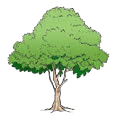

Lesson 16: Letter T
Lesson 16
Letter T

Draw the following pattern in your exercise book.
This spatial activity also requires a teacher-provided real object, tactile graphic, or raised-line resource. The text response does not replace tactile practice.
Trace the letter T in your exercise book.
This spatial activity also requires a teacher-provided real object, tactile graphic, or raised-line resource. The text response does not replace tactile practice.
Copy uppercase T in your exercise book.
No additional tactile resource is required for this language response.